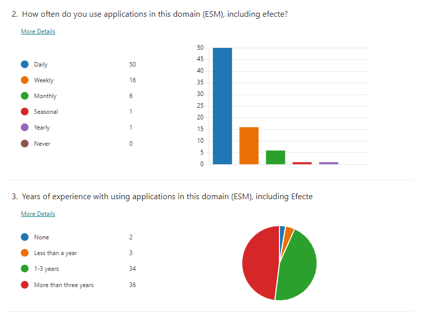

Patria · Mixed methods UX research
Usability scoring toolset
Making user experience part of software evaluation.
Context
Patria was reviewing a catalogue of hundreds of applications through an application landscape rationalisation initiative. User experience needed to inform decisions about which applications to retain, replace or procure alongside the organisation’s other evaluation criteria.
For my master’s thesis, I developed a structured, customisable UX evaluation method, tested it on an internal application and trained IT staff to use it. The work combined stakeholder requirements, a literature review, questionnaire analysis and usability testing.
Problem
A large software catalogue, without a dedicated UX team to evaluate it.
The IT organisation needed a practical way to assess user experience across that catalogue. Detailed usability studies for every application would demand more time and UX expertise than the organisation had available.
The method had to fit the existing evaluation process, give internal teams a consistent structure and produce results they could interpret when making software decisions.
Process
I defined requirements with IT leadership and the people responsible for application rationalisation. Understanding their decision process helped me shape a method they could incorporate into their work.
A literature review informed the evaluation model, drawing on SUXES and experimental user experience evaluation methods. I then tested the approach using Efecte, an enterprise service-management application in internal use.
The overall score needed an explanation.
Questionnaire: daily users rated efficiency more favourably than less frequent users. This was the only element of experience with a statistically significant difference between those groups.
Three usability tests: inexperienced users found the application confusing. I observed them spending substantial time finding the controls needed for their tasks.
Combining the questionnaire results with observations helped explain why experienced users could be relatively comfortable with software that others found difficult. The group comparison alone could not establish whether the cause was learning the interface or remembering it between uses.

View the questionnaire ratings
| Element of experience | Rating (1–5) | Score (0–100) |
|---|---|---|
| Efficiency | 3.21 | 55.25 |
| Utility | 3.04 | 51 |
| Learnability | 3 | 50 |
| Cognitive load | 2.80 | 45 |
| Error-free use | 3.03 | 50.75 |
| Robustness | 3.34 | 58.5 |
| Aesthetics | 2.45 | 36.25 |
| Usage environment | 3.13 | 53.25 |
| Average | 3 | 50 |
Values reproduced as reported in the thesis. See the full analysis and statistical tables in the thesis.
Solution
A repeatable structure, adapted to the evaluation.
The method defines ten elements of experience, with negative–positive statement pairs rated on a five-step scale. The relevant elements are selected for each evaluation. Ratings are converted to a 0–100 scale and averaged; qualitative evidence helps explain the result.
- 01Define
Set the purpose, user roles, use cases and relevant elements of experience.
- 02Evaluate
Gather questionnaire ratings and supporting evidence appropriate to the case.
- 03Interpret
Calculate the score and use the evidence to explain it for decision-making.
Explore the ten elements of experience
- Efficiency
- Utility
- Learnability
- Cognitive load
- Error-free use
- Robustness
- Accessibility
- Aesthetics
- Usage environment
- User role
For example, learnability ranges from “Using the application is hard to learn” to “Using the application is easy to learn.” The statement pairs can be customised to the evaluation context.
The questionnaire provides a common starting point. Usability testing and accessibility evaluation can supplement it according to the evaluation’s needs and available resources. The method also leaves room for future use of internal feedback and monitoring tools.
Impact
A method handed over for internal use.
I worked with stakeholders to incorporate the method into the software evaluation process and delivered training sessions to IT staff. The Efecte case demonstrated how questionnaire scores and qualitative findings could support interpretation together.
My manager subsequently confirmed that the toolset was useful and in use.
“Toolset is useful, we use it.”
My manager’s recommendation, 14 June 2024 · LinkedIn
Read the master’s thesis: Constructing a customizable user experience evaluation method.